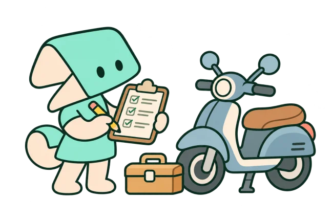
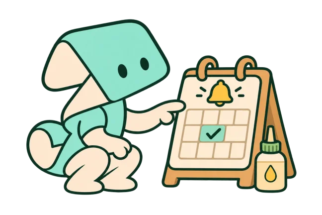
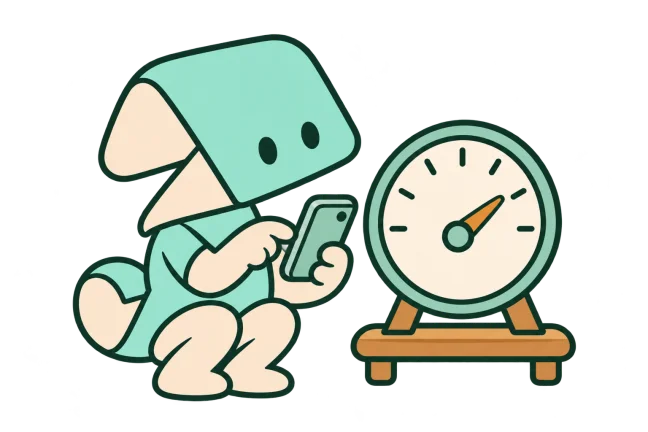

Riwayat servis
Catat tanggal, kilometer saat servis, pekerjaan bengkel, dan biayanya.
Simpan riwayat servis motor dan mobil, cek biaya bengkel, dan atur pengingat menurut tanggal atau kilometer.


Riwayat tersimpan per kendaraan.
Pilih tanggal, kilometer, atau keduanya.
Simpan bersama catatan servis.
Cek pengeluaran bengkel.
Misalnya, kamu ingin servis berikutnya pada 25.000 km. Perbarui angka odometer di ServisKita setiap kali kamu mengeceknya untuk melihat jarak yang tersisa.
Cara mengatur pengingat
Catat tanggal, kilometer saat servis, pekerjaan bengkel, dan biayanya.

Atur jadwal berdasarkan tanggal, kilometer, atau keduanya. Kamu juga bisa membuat pengingat berulang.

Masukkan angka kilometer terbaru dan lihat riwayat pembaruannya.
Simpan foto nota bengkel bersama catatan servis yang sesuai.
Lihat ringkasan pengeluaran servis dan bagikan laporan dalam PDF.
Simpan berkas cadangan di folder pilihanmu dan pulihkan saat diperlukan.
Rp0
Catat servis, atur pengingat, dan cek biaya untuk satu kendaraan aktif.
Rp49.000
Harga normal Rp100.000
Hemat 51%
Bayar sekali, aktif selamanya.
Kelola kendaraan tanpa batas. Buka Pengaturan → Tentang Premium di ServisKita. Harga akhir ditampilkan di Google Play sebelum kamu membayar.
Masukkan angka terbaru dari odometer motor atau mobilmu lewat menu Odometer. Pengingat kilometer memakai angka yang tercatat di ServisKita.
Bisa. Catatan servis dan data kendaraan tersimpan di perangkatmu.
Buat cadangan di menu Backup & Restore, lalu simpan salinannya di tempat yang bisa kamu akses dari HP baru. Pulihkan data dari berkas tersebut di ServisKita.
Cukup bayar sekali lewat Google Play untuk mengaktifkan Premium selamanya. Saat ganti HP, gunakan akun Google Play yang sama dan pilih Restore Purchase di pengaturan ServisKita.